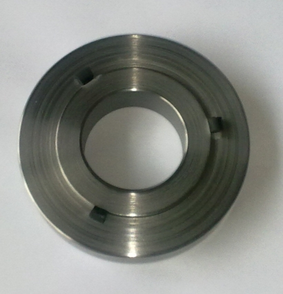
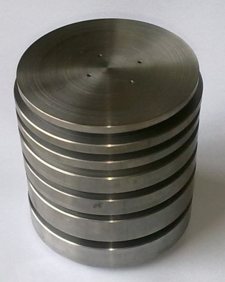
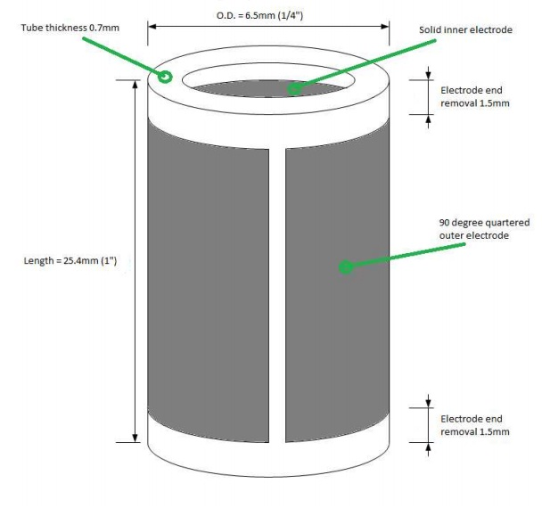

« Previous -
Version 26/50
(diff) -
Next » -
Current version
Andrew Starr, 09/07/2012 08:53 pm
Guiding principles of this STM design¶
- Minimise the effects of external vibrations by minimising size and mass
- Minimise the effects of temperature variation by matching material coefficients of expansion as closely as possible
- Minimise the effects of electronic noise by locating the sensitive circuitry as close as possible to the signal source
- Maximise instrument flexibility and ease of use by doing as much of the signal processing and control as possible in the digital domain
Also
- Use open source tools for all development
- Source all specialised materials and components from readily-available online sources
Main building blocks of the STM¶
High frequency vibration isolator¶
The STM relies on the precise control of the probe-sample gap. Any external vibration has the potential to disrupt this, so efforts must be made to isolate the instrument. Low-frequency vibration isolation is generally done with large pneumatic or elastomer damping systems. I'm hoping to be able to avoid these by making the instrument as compact and stiff as possible, thereby maximising its resonance frequency (and therefore its response to low frequency vibrations). To isolate from high frequencies, I have chosen the 'stacked plate' approach, as described and characterised in "Low- and high-frequency vibration isolation for scanning probe microscopy" (A I Oliva, M Aguilar and Victor Sosa in Measurement Science and Technology, 9 (1998) 383-390)
The drawings for the isolator stack plates can be found here. The plates are each separated with 3 pieces of 5mm long, 5mm diameter pieces of viton rubber as described in the paper. I used an off-the-shelf viton o-ring from a local supplier and cut pieces off, securing with cyanoacrylate glue:

The assembled stack:

I haven't yet characterised the attenuation of the isolator stack - more on this after I've done some testing.
Piezotube¶
